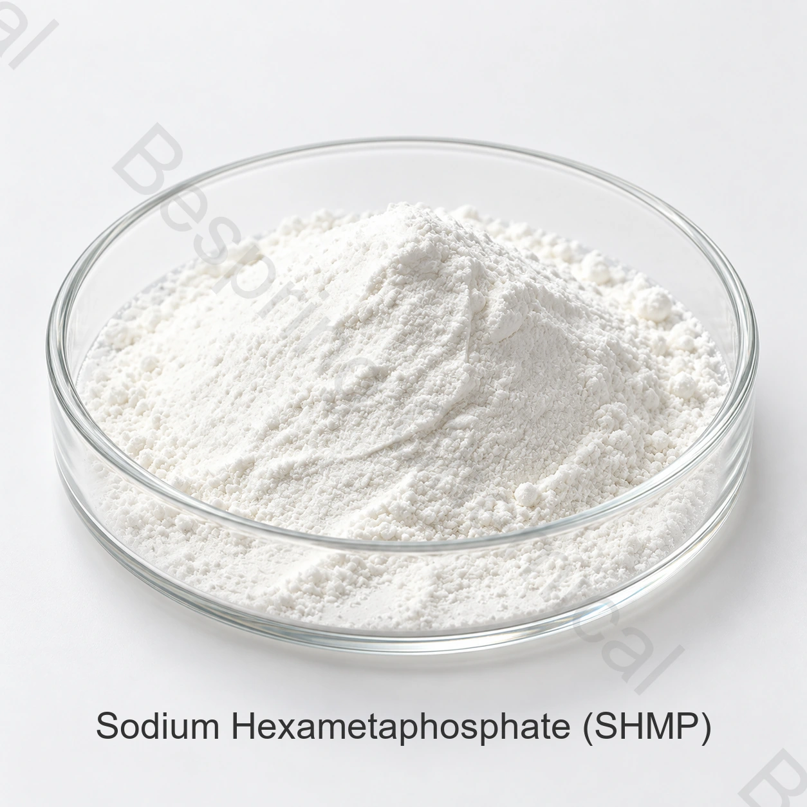

Sequestro de íons metálicos
Complexa certos íons metálicos que podem afetar a aparência do produto, textura ou estabilidade do processo.
Fosfato alimentar · SHMP · Pó branco
O hexametafosfato de sódio (SHMP) é um fosfato alimentar multifuncional utilizado em formulações permitidas para sequestro, regulação do pH, suporte de textura e melhoria da qualidade. Bespring fornece qualidade de alimento SHMP para compradores industriais.

Imagem do produto · confirme grau e embalagem na compra
Inclua seu padrão, quantidade, preferência de paletes, destino e aplicação para uma revisão eficiente.
Especificação definidaLimites comerciais e métodos acordados
Embalagem de 25 kgSaco de papel Kraft exterior com saco interno PE
Prazo de validade de 24 mesesA partir da data de fabricação sob armazenamento indicado
Carga do contêinerCom ou sem paletes
Visão geral do produto
O hexametafosfato de sódio de grau alimentício é um fosfato de sódio condensado solúvel em água fornecido como um pó branco. No processamento de alimentos, pode funcionar como um sequestrante, regulador de pH, correctivo de qualidade, ligante ou outro fosfato funcional, dependendo da formulação e uso permitido.
O nome comercial SHMP pode cobrir identidades de produtos descritas de forma diferente entre padrões e mercados. Os compradores devem confirmar o número CAS, a fórmula, a identidade dos aditivos alimentares aplicáveis, os métodos de ensaio e os requisitos do mercado-alvo antes da compra.
Função na formulação
SHMP pode executar várias funções, mas o efeito depende da receita completa, nível de uso, matérias-primas e condições de processo.
Complexa certos íons metálicos que podem afetar a aparência do produto, textura ou estabilidade do processo.
Contribui para o gerenciamento de tampão e pH em formulações alimentares adequadas e validadas.
Suporta textura, consistência e objetivos de processamento selecionados quando formulados corretamente.
Pode contribuir para a ligação, dispersão e estrutura estável do produto em aplicações permitidas.
Áreas típicas de aplicação
A adequação, a dosagem e a declaração do rótulo devem ser revistas em relação à formulação final e à regulamentação dos mercados de fabricação e de destino.
O SHMP é avaliado em formulações de proteínas e leite selecionados onde o sequestro, emulsificação, controle de pH e manejo de textura são relevantes.
Pode ser usado como um fosfato funcional a granel permitida, legumes, creme, clareamento e aplicações de sobremesa gelled.
Especificações do produto
A tabela apresenta limites comerciais de referência. A especificação contratual e o certificado de análise do lote orientam a aceitação do fornecimento.
Deslize ou use o teclado para ler todas as colunas
| Parâmetro | Especificação | Unidade / condition |
|---|---|---|
| Fosfato total como P2O5 | ≥ 68.0 | % |
| Fosfato inativo como P2O5 | ≤ 7.5 | % |
| Matérias insolúveis em água | ≤ 0.06 | % |
| Ferro (Fe) | ≤ 200 | ppm |
| Arsênio | ≤ 3 | ppm |
| Metais pesados (como Pb) | ≤ 10 | ppm |
| pH | 5.8–6.5 | Solução 1% |
| Fluoreto | ≤ 30 | ppm |
Especificação notice: Confirmar os métodos analíticos, as regras de amostragem, a identidade dos aditivos alimentares e os critérios de aceitação antes da contratação. Um lote de COA deve ser revisto em conformidade com as especificações de compra acordadas.
Embalagem e logística
O carregamento final está sujeito a limites de contêineres, dimensões de rota, paletes e confirmação de envio.
Armazenamento e prazo de validade
Identidade dos aditivos alimentares
Codex JECFA lista hexametafosfato de sódio como sinônimo sob polifosfato de sódio, vítreo (INS 452(i)). No entanto, o nome do produto e as referências CAS podem variar entre as especificações. Confirme que o grau, identidade e uso permitido oferecidos correspondem aos requisitos legais do seu mercado pretendido.
Perguntas do comprador
É utilizado em formulações alimentares permitidas como sequestrante, regulador de pH, correctivo de qualidade e fosfato funcional. As áreas de aplicação incluem queijos processados, carne, frutos do mar, legumes, macarrão, cremes e gel de sobremesa.
A especificação fornecida indica fosfato total como P2O5 em 68,0% de fosfato mínimo e inativo como P2O5 no máximo 7,5%.
Codex JECFA lista hexametafosfato de sódio como sinônimo sob polifosfato de sódio, vítreo (INS 452(i)). Dado que a identidade comercial e as referências CAS podem variar, os compradores devem confirmar a especificação e a designação do mercado-alvo aplicáveis.
Embalagem padrão é um saco de papel kraft 25 kg líquido exterior com um saco interno PE. O carregamento de referência é de 24 MT por 20GP sem paletes ou 22 MT com paletes, sujeito à confirmação final do envio.
Fornecer a norma alimentar, quantidade, embalagem e preferência de paletes, porto de destino, aplicação prevista e data de entrega solicitada.
Peça à equipe de vendas a especificação atual, TDS, SDS, documentos de qualidade aplicáveis, formato COA em lote e disponibilidade de amostra. Informe o mercado de aplicação e destino para que as informações relevantes possam ser revistas.
Consulta comercial
Compartilhe os detalhes comerciais e técnicos que afetam a seleção do produto, documentação, carga do recipiente e custo desembarcado.
Estas páginas apresentam materiais relacionados para diferentes setores. Escolha o grau, a especificação e os usos permitidos conforme a aplicação pretendida.
Informe o grau e o mercado de destino para confirmar os documentos disponíveis para seu pedido.
Uma referência externa não é um certificado de lote nem uma especificação da Bespring.